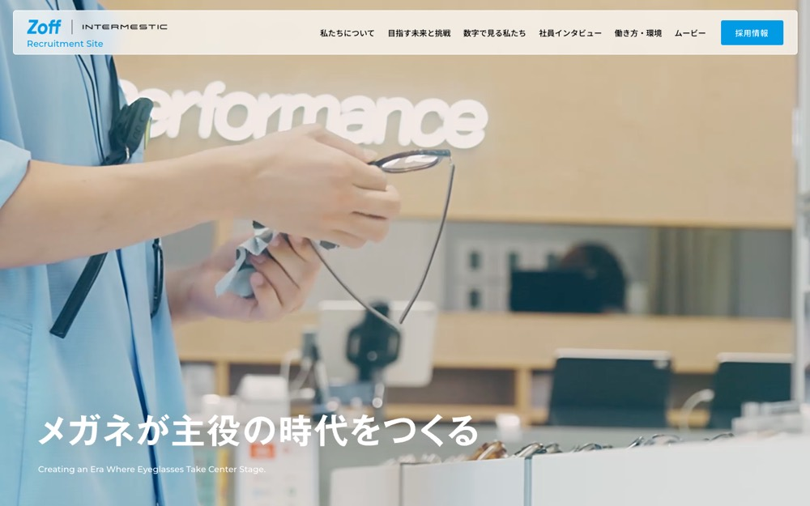

Zoff Recruitment Site
白地に #2299e1 を大きな面で置く配色。影も枠線もほとんど使わない。本文 18px・行間 1.5、セクション間 92px。
配色
文字色は #000000 / #ffffff / #2299e1 / #666666。
どこに使っているか（箇所数）
| 色 | 面 | 文字 | 枠線 | ボタンの地 |
|---|---|---|---|---|
#edeff0 |
12 | 0 | 0 | 1 |
#2299e1 |
4 | 6 | 0 | 3 |
#ffffff |
28 | 45 | 4 | 23 |
#202426 |
10 | 0 | 0 | 9 |
#009be4 |
13 | 8 | 0 | 7 |
#000000 |
0 | 88 | 0 | 0 |
#666666 |
0 | 19 | 0 | 0 |
#2299e1 は面4箇所・文字6箇所を行き来する。ボタンの地にも使う。
文字
和文
Noto Sans JP欧文
Montserrat本文
18px / 行間 1.5この見本は Noto Sans JP で表示していますあのイーハトーヴォのすきとおった風
あのイーハトーヴォのすきとおった風
あのイーハトーヴォのすきとおった風
あのイーハトーヴォのすきとおった風
あのイーハトーヴォのすきとおった風
あのイーハトーヴォのすきとおった風
余白とかたち
| コンテンツ幅 | 744px | |
|---|---|---|
| 読ませる段の幅 | 612px | |
| セクションの上下余白 | 92px | |
| 並びの間隔 | 9 / 11 / 14 / 23px | |
| 角丸 | 0px（大きな面は 3px） | |
| 影 | なし | |
| 画面幅の切り替え | 1179 / 1024 / 1023 / 768 / 767px |
ボタン
お問い合わせ
transparent / 13px / 500 / 角丸 0px
もっと見る
#ffffff / 13px / 500 / 角丸 113px
もっと見る
#202426 / 14px / 500 / 角丸 68px
ページの組み立て
上から順に、実際に並んでいたセクション。高さの比率もそのまま。
1
ヒーロー（画像）
900px
2
4カラム・画像あり
460px
3
3カラム・画像あり
740px
4
1カラム・画像あり
740px ・ #2299e1
5
6カラム・画像あり
420px
6
1カラム・画像あり
2940px
7
1カラム・画像あり
1300px
8
1カラム・画像あり
600px
9
3カラム・画像あり
1080px
10
6カラム・画像あり
860px ・ #edeff0
全10セクション、すべて全幅。
面と、その上に置く線・文字
| 面 | 使用箇所 | 線と文字 |
|---|---|---|
#ebf2f7 |
5 | #2299e1 |
#edeff0 |
2 | #2299e1 |
#2299e1 |
1 | #ffffff |
線と文字の色は固定ではなく、乗っている面で入れ替える。
部品
同じ形が 4 箇所。角丸 6px ／ 影なし
角丸は 0px だが、完全な円は別扱いで 3 箇所（56px×3）。角を丸めないことと、円のモチーフは両立する。
タグ
角丸 999px ／ 13px
PCとスマホ
同じサイトを390px幅で測り直した値。
| PC 1440px | スマホ 390px | |
| 本文 | 18px / 行間 1.5 | 18px / 行間 1.5 |
| 見出し | 24px | 14px |
| セクションの上下余白 | 92px | 32px |
| 左右の余白 | — | 23px |
| 並びの間隔 | 14px | 12px |
文字サイズの段は 18 / 15 / 14 / 12 / 11px。セクション余白はPCの35%まで詰める。
画像
16:9・18枚
3:2・11枚
1:1・4枚
68枚。うち 1 枚は画面いっぱいに置く。角丸 0px。